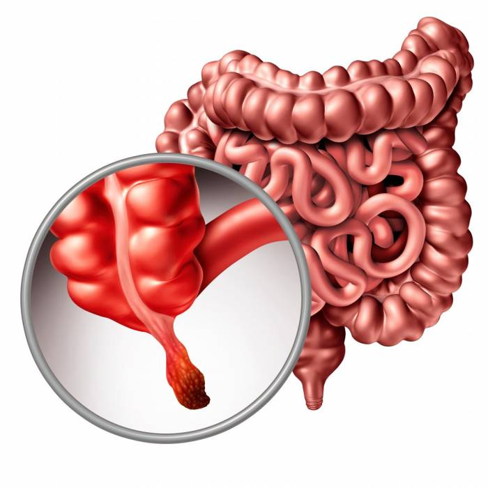

Apendicitis
Descripción

Es una afección en la cual el apéndice se inflama. El apéndice es un pequeño saco que se encuentra adherido al final del intestino grueso.
Síntomas
- Escalofríos o temblores
- Heces duras
- Diarrea
- Pérdida de apetito
- Náuseas y vómitos
Tratamiento
Extirpación del apéndice.